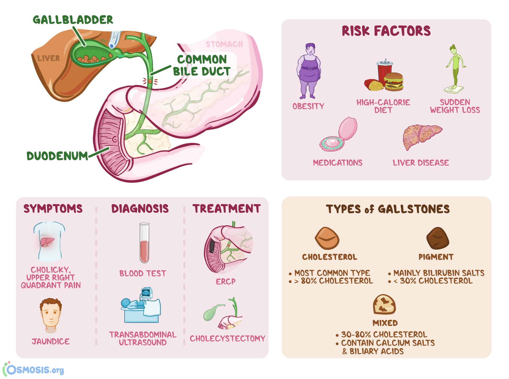

Choledocholithiasis

SYMPTOMS:
Gallstones in the bile duct may not cause symptoms for months or even years. But if a stone becomes lodged in the duct and obstructs it, you may experience the following
- abdominal pain in the right upper or middle upper abdomen
-
fever
-
jaundice (yellowing of the skin and eyes)
-
loss of appetite
-
nausea and vomiting
-
clay-colored stools
CAUSES
Scientists believe that cholesterol stones are caused by bile that contains:
- too much cholesterol
-
too much bilirubin
-
not enough bile salts
DIAGNOSIS:
If you have symptoms, a doctor will want to verify the presence of a gallstone in the common bile duct. He or she may use one of the following imaging tests:
- transabdominal ultrasound (TUS): an imaging procedure that uses high-frequency sound waves to examine the liver, gallbladder, spleen, kidneys, and pancreas
-
abdominal CT scan: cross-sectional X-rays of the abdomen
endoscopic ultrasound (EUS): an ultrasound probe is inserted on a flexible endoscopic tube and inserted through the mouth to examine the digestive tract
endoscopic retrograde cholangiography (ERCP): a procedure used to identify stones, tumors, and narrowing in the bile ducts
-
magnetic resonance cholangiopancreatography (MRCP): an MRI of the gallbladder, bile ducts, and pancreatic duct
percutaneous transhepatic cholangiogram (PTCA): an X-ray of the bile ducts
TREATMENT
- stone extraction
-
fragmenting stones (lithotripsy)
-
surgery to remove the gallbladder and stones (cholecystectomy)
-
surgery that makes a cut into the common bile duct to remove stones or help them pass (sphincterotomy)
-
biliary stenting